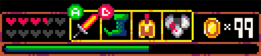
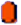

UI и UX дизайн в игровой индустрии
Геймдев - Процесс создания игры: от разработки и дизайна до выпуска на рынок. Это могут быть игры для мобильных телефонов, консолей, компьютеров или других гаджетов.
Творчество и вёрстка
Геймдизайн создает первое впечатление о ней и определяет, каким будет опыт взаимодействия пользователя с ее элементами.создания формы и визуального содержания, фирменного стиля игрового процесса, геймплея разрабатываемой игры.
Геймдизайн
Обширная область, основанная на компьютерных науках, программировании и графическом дизайне
Геймдизайнер — достаточно широкое понятие. В микрокомандах, разрабатывающих игры, он может работать вдвоём с программистом. В крупных компаниях у геймдизайнеров есть различные специализации, которые по сути являются разными смежными профессиями.
Чем занимается дизайнер игровых интерфейсов?
Задача дизайнера интерфейсов — проанализировать сценарии поведения пользователя и разработать
удобный
в обращении интерфейс. UI/UX-специалисту важно, какой опыт пользователь переживает и какие эмоции
он
при этом испытывает.
UX – это то, как игрок взаимодействует с интерфейсом;
UI – это то, как дизайнеры преподносят информацию пользователям
через иконки, сообщения и вибрации.
Mario
00000 x00
ui
worldtime
1 - 1
+1!
level
up
x
UI можно поделить на HUD и FE
UI Дизайн
ВИЗУАЛИЗАЦИЯ ДУШИ ИГРЫ
Работа над визуальным стилем начинается с подбора вдохновляющих референсов. Важно показать идею оформления в общих чертах.
HUD (heads-up display) – это информация, которую видит игрок во время геймплея. Например, мини-карта, счетчик жизни, уровень опыта, количество патронов и реплики. FE (frontend/menus) – это экран меню, развития персонажа, открытая мини-карта и инвентарь. HUD должен легко восприниматься игроком, а FE быть интуитивным и удобным в навигации.
Советы по
дизайну интерфейсов
Создание качественного игрового интерфейса требует соблюдения ряда психологических и фундаментальных (логических) принципов. Первые связаны с умственной работой и зрительным восприятием информации, а вторые отвечают за логичность структуры UI игры.
К числу психологических принципов относятся:
- Расположение важных элементов интерфейса по вектору движения взгляда (на диагонали из левого верхнего угла в правый нижний);
- Наличие ярких информативных изображений, дополненных текстом;
- Разбивка визуальной информации (элементов интерфейса) на группы по задачам;
- Размещение в интерфейсах привычных для пользователей элементов;
- Разбивка сложных и многофункциональных экранов на более простые с оптимальным для восприятия объемом информации.
UI - это седло, стремена и поводья. UX - это ощущение, что вы можете ездить на лошади.
- Дайн Миллер
Не «загромождайте» экран большим количеством различных элементов ;
Все элементы интерфейса должны быть единообразными — это позволит пользователю сократить время на выполнение игровой задачи и не совершать ошибок; игра должна поддерживать обратную связь с игроком через интерфейс, поэтому для объяснения временной недоступности того или иного элемента на экране должны отображаться подсказки;